十、游戏智能
Contents
AI
-
课程内容与资源
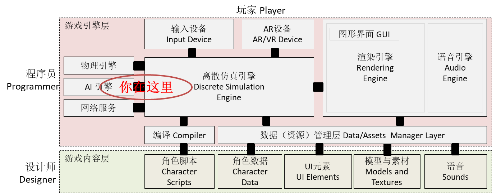
深入csharp
1、游戏智能与AI
1.1 人工智能概述
通常来说，人工智能（Artificial Intelligence）是研究、开发用于模拟、延伸和扩展人智能的理论、方法、技术及应用系统的一门新技术科学。人工智能的研究领域包括机器人、语言识别、图像识别、模式识别、自然语言处理和专家系统等。
IT 领域关注的人工智能技术，属于计算机科学。例如：人工智能发展史简图
1.2 游戏智能与人工智能的区别
游戏智能，
”the study and design of intelligent agents”, where an intelligent agent is a system that perceives its environment and takes actions that maximize its chances of success
尽管没有权威的定义，但可以理解为：在游戏规则约束下，通过适当的 算法 使得游戏中 NPC（Non-Player Character） 呈现为具有一定人类智能行为的 博弈对手，让游戏玩家面临不间断的 挑战，并在挑战中有所收获，包括知识和技能等。
因此，游戏智能与人工智能在设计目标上有着比较大的不同：
- 拟人化。游戏智能更注重游戏对象行为结果类似（模拟）人，既能做出令人惊讶的有效行为，也会犯各种愚笨的错误，从而与现实世界中不同的人匹配。而人工智能通常是超人设计，追求最佳结果。
- 可玩性。游戏智能并不意味着高大上的算法，它更注重针对不同类型的玩家设计不同能力的 NPC，例如：“小怪物”，“大boss” 等等，通常用等级这个参数来表达游戏智能 agent 的能力。
- 趣味性。游戏智能设计注重娱乐，而不只是算法研究。因此，算法会集合一些特效，让人感到愉悦。
游戏 AI 特点
Game: Design of rational behavior(理性行为)
- 不需要优化(and often will not)
- 通常是关于人性化的“描述”
- 属于认知科学
NPC（非人控制角色） 能和对手开展 meaningful choices 。 即要遇强则强，遇弱则弱；或形成挑战，而不能是不可战胜。
1.3 游戏智能的案例与应用场景
案例研究：P&D游戏的智能
为了帮助小朋友玩 P&D 过河，你决定开发 next 功能，提示下一步最佳玩法？但怎么设计呢？
因此，需要将牧师与魔鬼过河问题抽象为状态图：
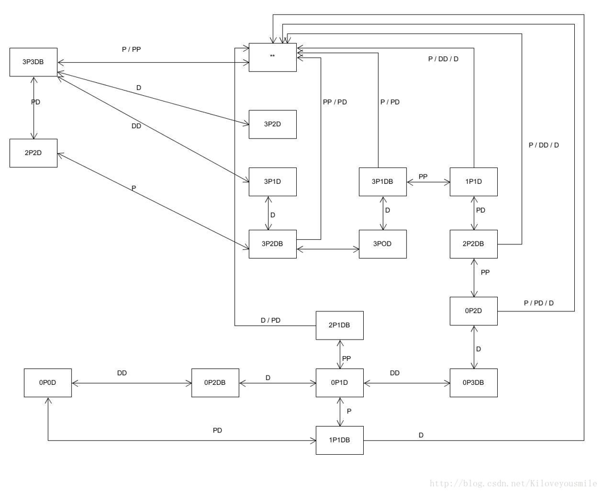
Kiloveyousmile 供图
- 观察状态图
- 开始状态 [3P3DB]
- 成功状态 [0P0D]；失败状态 *
- 中间状态 [xPyDX], 其中 x>=y and [(3-x)>=(3-y) or (3-x)==0]
- 可能动作：{P，D，PP，PD，DD}
- 问题求解：
- 对于任意非成功/失败状态，找一条最短路径到达成功状态
- 第一个动作即是问题的解
- 规约方法：
- 最短路径
这是人工智能教材上经典的案例之一。
对于用户，它非常神奇，机器真聪明。对于计算机专业学生，这种所谓智能技术仅是小菜。
案例研究：射击 NPC 设计
这并不是有趣
游戏AI设计者容易使玩家处于死地！
实现 NPC 的 Meaningful Choices 的方法：
- 收集信息的能力：
- AI 对象能获得的有价值信息
- 信息的完整性
- 与 player 的信息对称
- 为了实现目标的判断动作能力：
- AI 对象拥有哪些知识做行为判断
- 动作或动作序列对目标实现的效果
- 对 player 的知识应用和响应速度的挑战合理性
- 学习能力：
- AI 对象基于历史信息的学习、优化能力
- 如何与 player 学习曲线的一致性
具体的：
- NPC Sensing information
- Position? Velocity? Acceleration?
- NPC Acting
- Calculation
- Prepare gun time dt
- Bullet speed and power
- Hit rates
- NPC Learning
- Player’s preference discovery
- Learning time
一种可能的设计：
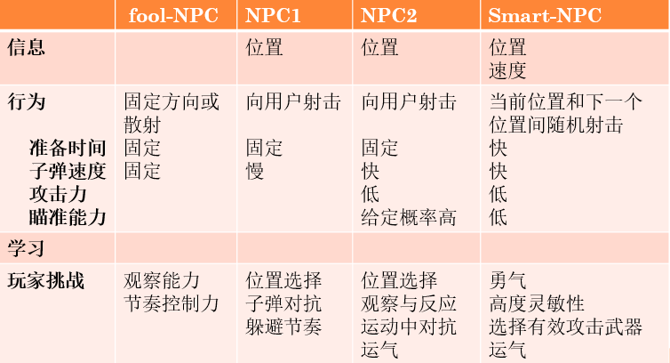
这是AI？
尽管毫无技术可研，但是这样的 AI 出现在技术所有游戏类游戏中。
也许 缺陷 太多，联网“吃鸡”游戏开始流行，开始用 “真人” 替代 NPC
游戏智能常见场景
- Autonomous Characters (NPCs)
- Mimic(模仿) the “personality” of the character
- May be opponent or support character
- Strategic Opponents（策略对抗）
- AI at the “player level”
- Closest to classical AI
- Dialog（会话）
- Intelligent commentary
- Narrative（故事） management
游戏智能常见类型
- Behavioral（行为） AI
- A NPC acts with its “personality”（个性化，拟人化）
- Sense-Think-Act cycle
- Strategic（策略） AI
- Decision tree（决策树）
- Path findings（寻路） AI
- Breadth-First Search
- A* algorithm
- Steering（巡航）
2、模型、方法与常用算法
2.1 “感知-思考-行为”模型
“sense-think-act” paradigm（范式） 是构造 agent、robot、NPC（Non-Player Character） 的基础概念。自从上世纪80年代提出以来，我们使用 Sense-Think-Act 范例思考机器人如何工作，并设计它们。 即使机器人最终设计的方式不同，STA 通常仍然是一个有用的开始。 随着机器人技术的发展，协同技术越来越重要，机器人之间的 “Communicate”通常也纳入设计之中。本节主要关注 NPC 如何产生看似理性（Rational）的行为（模拟人）的设计方法。
它与算法设计思考输入、处理、输出类似，但完全不同哦！
1、感知（Sense）
感知是 agent 接收世界信息的行为，其获取的数据将是思考的输入。在游戏中，程序是可以获得游戏世界任意信息的，设计一个“干死”玩家的算法通常是比较容易的，因此如何限制信息获取是设计不同级别 agent 的核心问题。（类似围棋哪种“完美信息贯序博弈”算法，属于学习型智能，不在这里考虑）
在游戏中，定义获取信息能力通常可以从视觉、听觉和嗅觉等渠道去考虑：
- 视觉（Vision）
- 识别“敌人”的位置和属性
- 识别“障碍物”及其范围
- 听觉（Sound）
- 识别事件的方向和距离
- 嗅觉（Smell）
- 获得玩家/事件的痕迹
使用距离、角度、障碍物限制 agent 发现玩家位置等信息，或者使用干扰影响信息的准确性，这些是设计游戏 agent 常见的手段。如果 agent 都拥有玩家位置和导航地图，结果就是一窝蜂的现象，这是没有趣的事情。合适的限制，将使得 agent 在相同的决策算法下，呈现丰富的行为。
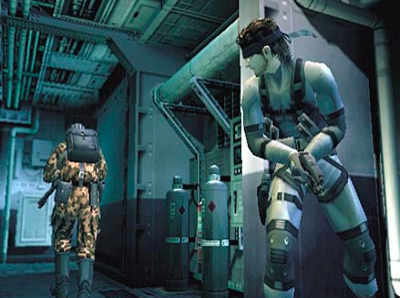
视线限制
一种简单的方法就是 agent 结合不同类型的触发器、探头，构造不同的获取信息的场景。最后将感知的结果放在一个数据结构中（类似 UnityEngine.EventSystems.PointerEventData）
重要
在 Agent Thinking 时，不可获取感知以外的数据信息。
2、思考（Think）
Think 就是算法，它的输入是感知的数据，输出是行为（behaviours）。 思考的算法，通常就是我们所说的游戏规则的一部分，即 agent 能做什么，该做什么。 通常这不是程序员的工作，而是游戏设计师的工作。游戏 agent 的思考类似人脑的决策过程，这其中的关键不是打造最强大脑，而是建立符合游戏玩家难度曲线，可以控制、且符合社会准则的行为。另一个相关问题，玩家难度曲线在编程阶段是未知的，依赖众多玩家与 agent 的操作与对抗结果。它在游戏测试和运维过程中存在巨大不确定性（在数据驱动的设计和集成脚本引擎等章节中讨论解决方案），因此：
重要:将 agent 决策过程用 If ... Then ... 硬编码写入程序逻辑是不可行的！
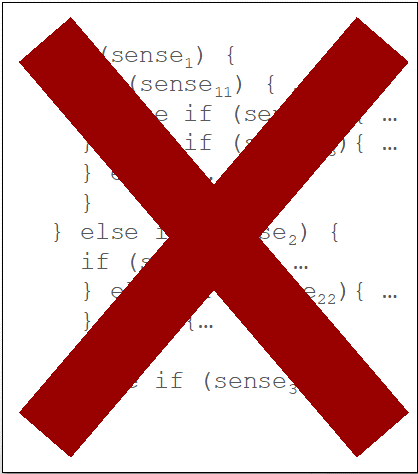
目前，主要方法有：
规则推理引擎
规则推理引擎（Rule-based Inference Engine）也叫产生式系统或推理模型（inference model），是由基于规则的专家系统发展而来。基于规则的专家系统是人工智能领域中专家系统的一个分支，它模拟人类的推理方式，使用试探性的方法进行推理，并使用人类能理解的术语解释和证明它的推理结论。基于规则的专家系统，基本概念包括：
- 事实（facts）: 事实是用来表示已知的数据或信息。
- 规则（Rules）: 即产生式规则，用来表示系统推理的有关知识。 规则由条件和动作组成，格式一般为：
IF 条件 Then 动作，例如Rule1: Human(x) => Mortal(x)（一阶谓词逻辑，离散数学）
规则推理引擎的基本部件包括：

规则推理引擎有许多实现，一般基于 RETE 算法。 入门读物
状态机引擎
有限状态自动机（Finite State Machine / FSM）是可以图形化的自动执行工具。在 unity 中，它是标准化的 agent（NPC） 动作自动控制工具。
举个例子，让我们来看一个典型的射击游戏中的人工智能守卫。它的状态可以非常简单，如巡逻（Patrol）、追逐（Chase）和射击（Shoot）。因此，定义一个状态机主要工作包括：
- 状态：该组件定义了一组状态，一个游戏实体或NPC可以选择（巡逻、追逐和射击）
- 转移：该组件定义了不同状态之间的关系
- 规则：该组件用来触发状态转移（玩家在视线范围内、距离足够攻击、丢失/杀死玩家）
- 事件：该组件用于触发检查规则（守卫的可见区域、与玩家的距离等）
《雷神之锤2》里的怪物可能具有以下状态：站立、行走、跑步、躲避、攻击、空闲和搜索。有限状态机广泛地应用于游戏人工智能中，因为它们易于实现，不管对于简单还是相对复杂的游戏都游刃有余。
决策树
决策树（Decision Trees）又称为行为树（Behaviour Trees）。
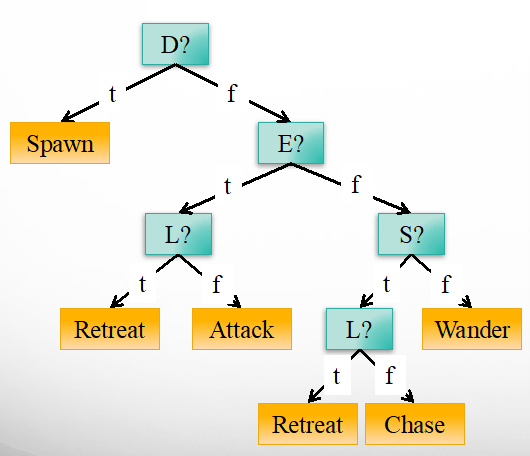
对于专业开发者，代码程序优于可视化程序的支持者，并不喜欢用图编程序。如果你有兴趣，这篇博客可入门，UNITY行为树制作AI简单例子 。
更好的方案就是集成动态脚本程序，游戏逻辑一般不复杂，配合动态脚本和简单游戏设计工具，会有更灵活的编程体验。
以上仅是经典人工智能的一些方法
3、行动（Act）
行动（Act）将思考（Think）的结果作为输入，该部分的任务就是使得 agent 行为更符合物理世界的规律，使得“心想事成”这样理想的结果变得不确定。
例如：用户 或 agent 获取了目标位置，并发出“shoot(pos)”这个命令。这时的逻辑是子弹的时点、射击位置。如果你设计的 agent 立马将子弹送到指定位置，多少对手都死了！
通常需要考虑的要素包括：
- 准备时间。在准备时间通过光、声等方式提示对手
- 动作时间。从动作开始到结束是一个序列
- 干扰因素。利用风、地形、随机数使炮弹有一定偏差
行动：策略管理者
“不可见 NPC”：创建 NPC 组对象，由组对象控制一组 NPC
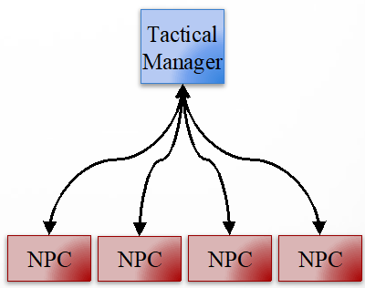
应用场景
- 保护游戏单元
- 多向攻击
- 交叉火力
- 组队交替前进
- 多路追击或逃跑
练习 10-01，决策练习（状态机）
已知一个任务 teller 的行为状态机，如图：
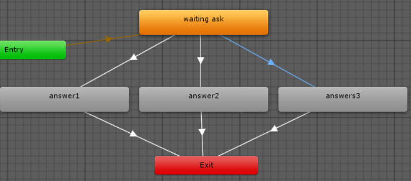
编写程序完成以下决策:
- answer 变量每次进入状态时为 0
- 玩家一个任务未完成，回答的概率
- （50%，45%，5%）
- 玩家完成对应任务后，自动按概率分配。
- 例如：玩家完成任务1，回答概率（0,90%,10%）
2.2 寻路算法 A*
2D 寻路，主要考虑：
- 地图与路障
- 算法性能
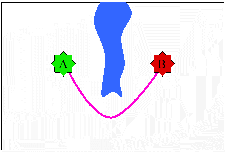
地图建模、行为建模，抽象成为带权路径最短问题
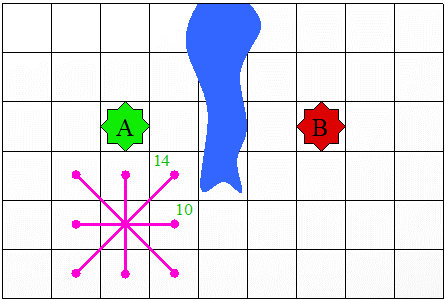
宽度优先检索
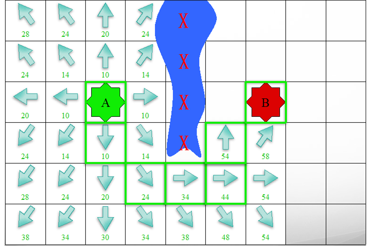
A* 算法
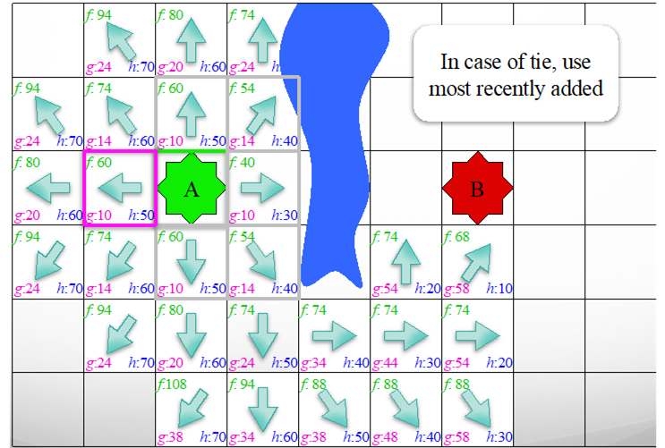
A* 算法的阶梯步进问题
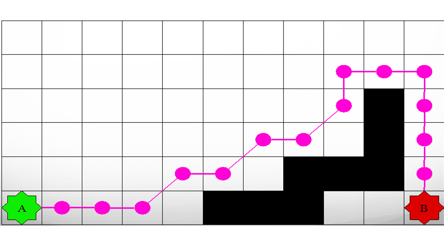
路径平滑
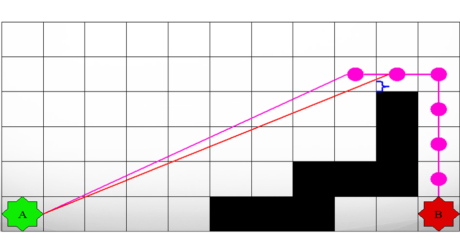
2.3 势能场（Potential Field）与驾驭（steering）
人工势能场（Artificial potential fields）与导航
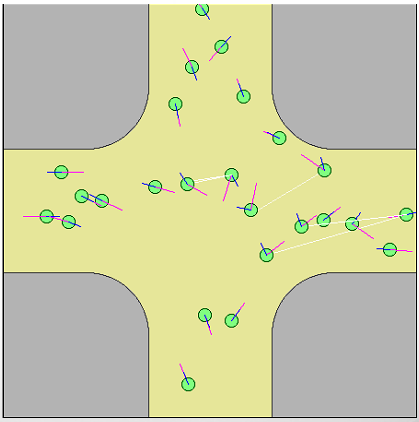
利用路径作为力向量
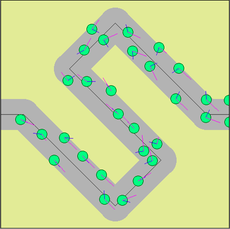
目标吸引力向量
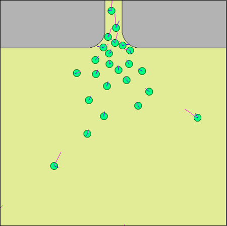
2.4 群体智能
蚁群算法
例子群算法
2.5 游戏智能必知
可玩性第一
- Complete intelligence is not fun
- Player should have a chance of “winning”
- Purpose is to make your game fun, not smart
- Challenge: make your AI “smartly stupid”
- AI should exhibit reasonable behavior
- But should have flaws the player can exploit
10 种使智能变得萌笨的方法！！！
- Do not cheat
- The AI should not be omniscient(无所不知)
- Players will notice this
- Do not kill on the first attempt
- First “miss” gives player time to react
- Have horrible aim
- Same as it is in the movies
- Allows abundant gunfire without being too hard
- Do not shoot on first sight
- Give player time to run for cover
- Warning the player
- Use different clues(线索): animations, sounds
- Important when attacking from behind
- Attack “kung-fu” style
- Do not all gang up at once(一伙出现)
- NPCs should look busy (aiming, reloading)
- Tell player what you are doing
- AI state should have visual cues
- Intentionally be vulnerable(故意的容易受伤)
- Design weaknesses in the AI to exploit
- 例如：Boss常有固定容易死的部位。探索型玩家最爱
- Do not be perfect
- NPC always makes mistakes in time
- Pull back at the last minute（关键时刻，小宇宙爆发）
- Push the player hard, and then pull back
- 例如：最后一口血，很大概率能打死了三口血的Boss
3、Unity 3D 导航与寻路
3.1 基本概念
Unity 导航系统允许创建给游戏角色导航的游戏世界。如下图所示，游戏角色可以在蓝色联通的网格上，找到去任意一点最短的路径，且具有一定爬坡、跳沟壑的能力。

- 导航网格（NavMesh） (Navigation Mesh) 是一种数据结构，它描述了游戏对象可行走的表面。通过三角网格，计算其中任意两点之间的最短路径，用于游戏对象的导航。它是根据场景几何结构自动创建或烘焙构建。
- 导航网格代理 (NavMesh Agent) 组件创建具有寻路能力的角色。Agent 使用NavMesh 推理，避免彼此以及移动障碍物。
- 网格外链接 (Off-Mesh Link) 组件允许将不连接的块之间建立“传送门”。例如，跳过沟渠或围栏，或在穿过它之前打开门，都可以被描述为 Off-Mesh Link。
- 导航网格障碍物 (NavMesh Obstacle) 组件允许您描述 agent 在移动时应避免的移动障碍。由物理系统控制的桶或箱子就是很典型的障碍。在障碍物移动的过程中，Agent 尽力避开它，但一旦障碍物变得静止，它将在导航网格上开一个洞，以便 Agent 可以改变他们的路径以绕过它，或者静止的障碍物阻塞路径，使得 Agent 找到其他路线。
更详细的描述，参见官方 导航系统的内部工作原理
3.2 导航设置基础
本节的任务是熟悉上述概念及其使用。
操作 10-01 ，Agent 和 Navmesh 练习
- 创建一个新项目
- 创建一个面。层次（Hierarchy）视图， Context 菜单 -> 3D Object -> Plan
- 创建蓝色材料。 Project 视图， Context 菜单 -> Create -> Material
- 创建一个 Cube，添加蓝色材料，制成 wall 预制
- 创建一个 Sphere，添加粉色材料，制成 target 预制
- 导入角色标准资源， Project 视图， Context 菜单 -> Import Packages -> Characters
- 添加 AI 角色， Standard Assets :: Charaters :: ThirdPersonCharater :: Prefabs :: AIThirdPersonController
- AICharacterControl 脚本写的很好，用 namespace 标识独立模块是最佳实践！ 组件功能简单，它使用 NavMeshAgent 组件，保持游戏对象实时追踪目标
- 组件 UnityEngine.AI.NavMeshAgent ，它自己有一些设置参数。
- 布局如图地图
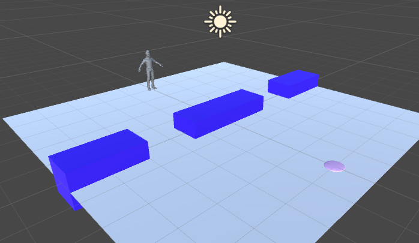
图中：
- camera 的 position = (0,5.-10); rotation = (30,0,0)
- AIThirdPersonController 的 position = (0,0,-4)
- target 的 position = (0,0,-4)，scale = (0.5,0.1,0.5)
- wall 0 的 position = (0,0,0)， scale = (3,1,1)
- wall 1 的 position = (4,0,0)， scale = (2,1,1)
- wall 2 的 position = (-4,0,0)， scale = (2,1,1)
完成布局后
- 将 target 拖入 AIThirdPersonController 对象的 AICharacterControl 组件的 Target 插槽
这时运行并不会自动寻路，系统会提示 "GetRemainingDistance" can only be called on an active agent that has been placed on a NavMesh.
现在需要的是制作 Navmesh 让 NavMeshAgent 工作
- 菜单 Windows -> Navgation，出现如下编辑面板
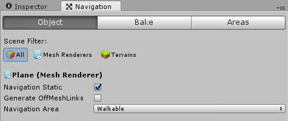
- 选择 Plane，target， 选择 Navgation 的 Object 面板
- 设置 Navigation static 选中
- 设置 Navigation area 为 Walkable
- 选择所有 wall。
- 设置 Navigation static 选中
- 设置 Navigation area 为 Not walkable
- 选择 Navgation 的 Bake 面板, 图含义非常清晰，官方文档有图解
- 点解下方 Bake 按钮，出现
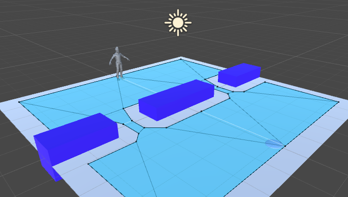
图中，水蓝色凸多边形构成的网格就是寻路算法的数据结构，agent 将用它来导航。
!!要预先生成的 Navmesh 、光照纹理贴图，都是高资源消耗的哦！
最后对 target 挂一段熟悉的代码：
|
|
运行！寻路功能完成
操作 10-02 ，Obstacle 和 Off Mesh Link 练习
- 将当前场景另存了 nav2
- 创建一个 Cylinder
- 设置 scale = (0.5, 0.01, 0.5)
- 添加黄色材料，制成 mark 预制
- 在层次视图创建两个 mark 游戏对象
- position 分别是 (0,0,-1),(0,0,1)
- 在 Naviagtion 编辑视图选择 Object，设置为 Walkable
- 添加一个 emtpy 对象，命名 mesklink
- 在 Inspector 窗口添加组件， Add Component -> Navigation -> Off Mesh Link
- 将两个 marks 分别拖入组件 start, end 插槽
- 设置 Cost -1
- 在图上放置一个灰色 cube 命名 Obstacle
- 在 Inspector 窗口添加组件， Add Component -> Navigation -> Nav Mesh Obstacle
- Nav Mesh Obstacle 选中 Carve，它会自动切割导航网格
- 如图布局，并 Bake 生成如图 Navmesh
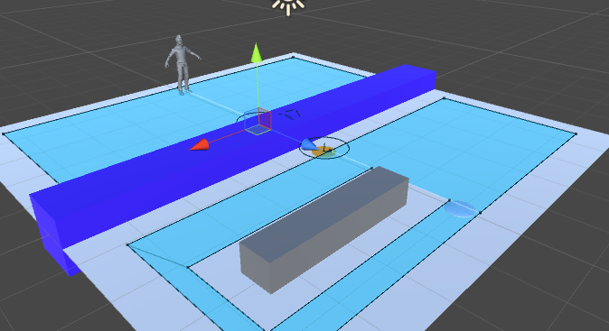
运行！在运行过程中，
- 修改 Obstacle 的位置，大小
- 禁灰 mesklink 和 激活 mesklink
做一个门打开、关闭的效果，如何实现？
3.3 更复杂的导航应用
掌握了以上概念，做一般项目一定没问题。以下博客阅读起来也会更容易。
参见师兄的实践 Navmesh使用
3.4 NavMesh 构建与工具
使用 Bake 构建的导航并不一定能满足所有游戏需求。因此有必要根据物体表面手动编辑或程序控制 navmesh。
具体参见官方手册
4、作业
以下作业三选一
1、 有趣 AI 小游戏制作，不限于以下范围
- 让事物具有学习功能，经过不同训练可以达到不同效果。如健身达人
- 利用机器学习或人工智能算法实现学习的创新游戏场景片段
- 利用在线语音识别或人脸识别等AI服务的创新游戏场景片段
2、 坦克对战游戏 AI 设计
从商店下载游戏：“Kawaii” Tank 或 其他坦克模型，构建 AI 对战坦克。具体要求
- 使用“感知-思考-行为”模型，建模 AI 坦克
- 场景中要放置一些障碍阻挡对手视线
- 坦克需要放置一个矩阵包围盒触发器，以保证 AI 坦克能使用射线探测对手方位
- AI 坦克必须在有目标条件下使用导航，并能绕过障碍。（失去目标时策略自己思考）
- 实现人机对战
3、【2020 不接受该作业】P&D 过河游戏智能帮助实现，程序具体要求：
- 实现状态图的自动生成
- 讲解图数据在程序中的表示方法
- 利用算法实现下一步的计算
- 参考：P&D 过河游戏智能帮助实现
Author 潘茂林
LastMod 2020-11-20